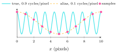

Statement
If the spectrum of is zero for , sampling with allows exact reconstruction (sinc interpolation). Otherwise a component at frequency  appears at the alias inside .
appears at the alias inside .
Derivation
Sampling multiplies by a comb of period  ; in frequency this convolves the spectrum with a comb of period (convolution theorem): copies of the spectrum repeat every . They do not overlap only if the bandwidth .
; in frequency this convolves the spectrum with a comb of period (convolution theorem): copies of the spectrum repeat every . They do not overlap only if the bandwidth .
Picture

Sampled once per pixel, a pattern of 0.9 cycles per pixel is indistinguishable from one of 0.1.
Example
Rows of vines 2.5 m apart imaged with 10 m pixels are far beyond the Nyquist limit (20 m period): they can appear as broad fake stripes. Downsampling a 10 m image to 30 m by taking every third pixel aliases detail; averaging blocks first (a low-pass) avoids it.
Intuition
A wheel filmed at too low a frame rate seems to turn slowly backwards: the samples cannot tell a fast turn from a slow one.
Pitfall
Aliasing cannot be removed after sampling: once folded, true and false frequencies are mixed. It must be prevented before (optics, detector size, anti-alias filtering).